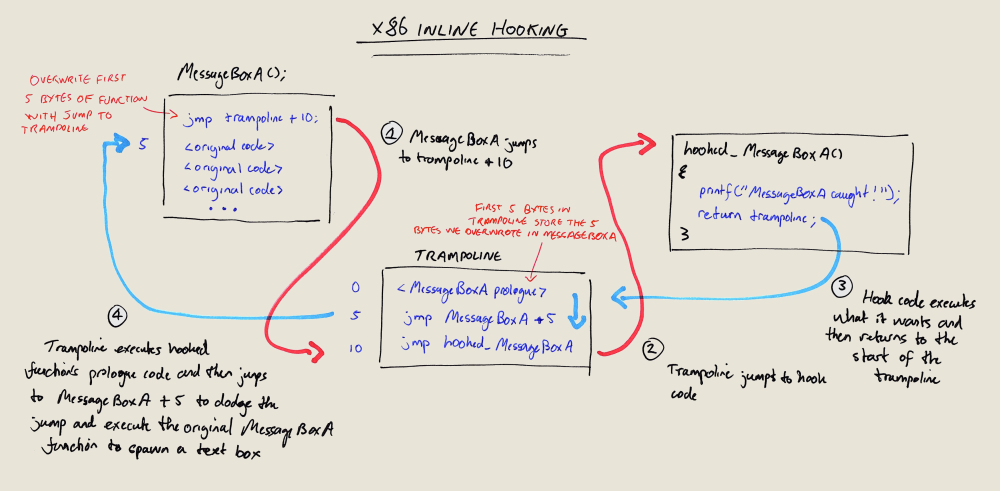
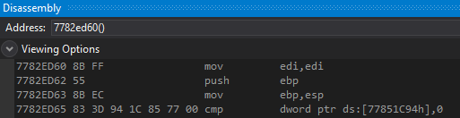
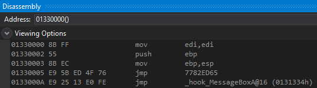
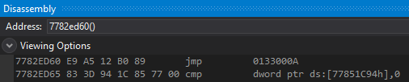

# x86 Inline Hooking - E9
Links•
https://blog.nettitude.com/uk/windows-inline-function-hooking ◇
https://github.com/nettitude/InlineFunctionHooking - code for above
•
http://www.rohitab.com/discuss/topic/33771-patch-hook/?p=10062694 - Inspiration for MalwareTech's BasicHook
•
https://github.com/MalwareTech/BasicHook ◇
https://www.malwaretech.com/2015/01/inline-hooking-for-programmers-part-1.html ◇
https://www.malwaretech.com/2015/01/inline-hooking-for-programmers-part-2.htmlInline hooking refers to placing a hook inside the body of the function.
Not before it, not after it, but in the function body.
To hook a function,
you overwrite its first 5 bytes with a jump to trampoline space.
This trampoline space stores the bytes we overwrote, followed by a jump to our hook code.
## MessageBoxA Diagram
This is a diagram of inline hooking MessageBoxA.
We've overwritten the first 5 bytes of MessageBoxA with a jump to trampoline + 10.
In the trampoline space, we've saved those bytes we overwrote.
When a user calls MessageBoxA:
1. The hook code gets hit, and MessageBoxA jumps to trampoline + 10
2. Trampoline + 10 jumps to our hooked_MessageBoxA function
3. hooked_MessageBoxA does its thing, and then returns to the trampoline + 0
4. The trampoline space executes MessageBoxA's prologue code, and then jumps to MessageBoxA + 5
- Jumping to MessageBoxA + 5 dodges to the jump to trampoline space
and executes the original MessageBoxA function
If you didn't want to execute the original MessageBoxA function,
you could simply return 0
Here's what MessageBoxA looks like before it's been hooked.
mov edi, edi push ebp mov ebp, esp is the function prologue we'll overwrite.
Here's the trampoline space. You can see:
• MessageBoxA's prologue code
• a jump to to MessageBoxA + 5 -
jmp 7622E95• and a jump to the hooked function -
jmp _hook_MessageBoxAAnd here's MessageBoxA after it's been hooked.
You can see we've overwritten the first 5 bytes with a jump to trampoline + 10 at
0x0083000A.
## Code
Here's my demo code of inline hooking MessageBoxA.
The code is well commented, so hopefully it shouldn't need any extra explanation.
NOTE:
• NO ATOMIC OPERATIONS
• NO DISASSEMBLER USED
◇ So installed hooks might have junk bytes at the end and thus might not work
I've done this so the code is kept simple.
/*
x86 inline hooking using E9 relative jumps.
*/
#include <stdio.h>
#include <Windows.h>
int hook_size = 5;
int trampoline_size = 15;
int(__stdcall* orig_MessageBoxA)(HWND hWnd, LPCSTR lpText, LPCSTR lpCaption, UINT uType);
int __stdcall hook_MessageBoxA(HWND hWnd, LPCSTR lpText, LPCSTR lpCaption, UINT uType)
{
printf("MessageBoxA intercepted! \n");
printf("\t text: %s \n\t caption: %s \n\t type: %d \n", lpText, lpCaption, uType);
return orig_MessageBoxA(hWnd, lpText, lpCaption, uType);
}
/*
Hook a function.
Parameters:
char* function - name of the function to hook
char* dll - name of the DLL where the function resides
void* detour - the function to detour to
void** p_orig - address of the pointer to the original function
*/
BOOL hook(char* function, char* dll, void* detour, void** p_orig)
{
BOOL ok = TRUE;
// Grab address of target function and allocate trampoline space
void* orig_func = GetProcAddress(LoadLibraryA(dll), function);
void* trampoline = VirtualAlloc(NULL, trampoline_size, MEM_COMMIT | MEM_RESERVE, PAGE_EXECUTE_READWRITE);
/*
Calculate E9 relative jumps.
Formula is: (target - current_addr)
*/
DWORD jmp_originalfunction = (DWORD)orig_func - ((DWORD)trampoline + 5);
DWORD jmp_hook = (DWORD)detour - ((DWORD)trampoline + 15);
DWORD jmp_trampoline = ((DWORD)trampoline + 10) - ((DWORD)orig_func + 5);
/*
Construct trampoline.
Structure should be:
0 8B FF mov edi,edi ; Prologue of original function
2 55 push ebp
3 8B EC mov ebp,esp
5 E9 5B ED 54 76 jmp 7782ED65 ; Relative jump to original function
A E9 25 13 11 FF jmp 003f1334 ; Relative jump to hook code
*/
memcpy_s((BYTE*)trampoline, 5, orig_func, 5);
*(BYTE*)((DWORD)trampoline + 5) = 0xE9;
*(DWORD*)((DWORD)trampoline + 6) = jmp_originalfunction;
*(BYTE*)((DWORD)trampoline + 10) = 0xE9;
*(DWORD*)((DWORD)trampoline + 11) = jmp_hook;
// Install hook at function
DWORD old_protect = 0;
VirtualProtect(orig_func, hook_size, PAGE_READWRITE, &old_protect);
*(BYTE*)orig_func = 0xE9;
*(DWORD*)((DWORD)orig_func + 1) = jmp_trampoline;
VirtualProtect(orig_func, hook_size, old_protect, &old_protect);
/*
Set pointer to original function to the start of the trampoline.
When orig_Function() is called, it will execute the prologue @ trampoline
and follow the jump to the original hooked function.
*/
*p_orig = trampoline;
FlushInstructionCache(GetCurrentProcess(), orig_func, hook_size);
return ok;
}
/*
Unhook a function.
Parameters:
char* function - name of the function to unhook
char* dll - name of the DLL where the function resides
void* trampoline - pointer to the address of the trampoline space
*/
BOOL unhook(char* function, char* dll, void* trampoline)
{
BOOL ok = FALSE;
DWORD old_protect = 0;
/*
Grab address of original function,
make it writable,
and restore its first 5 bytes by copying them from the trampoline space.
*/
void* orig_func = GetProcAddress(LoadLibraryA(dll), function);
VirtualProtect(orig_func, hook_size, PAGE_READWRITE, &old_protect);
memcpy_s(orig_func, hook_size, trampoline, 5);
VirtualProtect(orig_func, hook_size, old_protect, &old_protect);
/*
Free trampoline space
and flush instruction cache at original function.
*/
VirtualFree(trampoline, 0, MEM_RELEASE);
FlushInstructionCache(GetCurrentProcess(), orig_func, hook_size);
return ok;
}
int main(void)
{
MessageBoxA(NULL, "I think I should greet myself", "Hmm...", MB_OK);
hook("MessageBoxA", "User32.dll", &hook_MessageBoxA, (void*)&orig_MessageBoxA);
MessageBoxA(NULL, "Hello", "Hi #1", MB_OK);
MessageBoxA(NULL, "Hello good sir!", "Hi #2", MB_OK);
unhook("MessageBoxA", "User32.dll", (void*)orig_MessageBoxA);
MessageBoxA(NULL, "Did he hear me ok?", "Hmm...", MB_OK);
return 0;
}